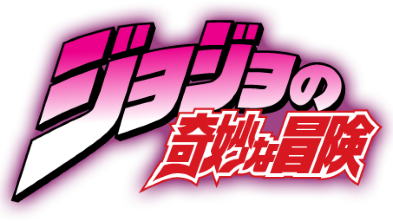

Os Stands são manifestações físicas da energia vital de uma pessoa, geralmente representados por figuras únicas com habilidades sobrenaturais. Eles surgiram na série JoJo's Bizarre Adventure e cada Stand reflete a personalidade, força de vontade ou traços do usuário...



STANDMASTER
CARDS
Descubra tudo sobre os Stands e seus usuários
Star Platinum
Stand poderoso com força, velocidade e precisão extremas. Capaz de parar o tempo por alguns segundos.
The World
Similar ao Star Platinum. Possui força física incrível e a habilidade de parar o tempo.
Crazy Diamond
Pode restaurar objetos e pessoas à sua forma original, curando feridas ou consertando coisas.
Killer Queen
Transforma qualquer objeto em bomba. Tem habilidades secundárias como Sheer Heart Attack e Bites the Dust.
Gold Experience
Dá vida a objetos inanimados. Seus golpes fazem o inimigo sentir danos com percepção distorcida do tempo.
Tusk act 4
Usa o poder da rotação infinita para perfurar barreiras e ignorar regenerações. Um dos Stands mais poderosos.
Ball Breaker
Usa rotação para causar envelhecimento e dano espiritual. Surgido com a técnica da Corrida de Cavalos.
D4C
Permite viajar entre dimensões paralelas e trocar de lugar com versões alternativas de si mesmo.
Soft and Wet
Usa bolhas para roubar propriedades como som, fricção e umidade de objetos ou pessoas.
Wonder of U
Manipula calamidades. Quem o persegue é afetado por acidentes inevitáveis.
Jotaro Kujo
Jotaro Kujo é um jovem durão e protetor que despertou seu Stand, Star Platinum, após ser perfurado pela Flecha de Stand. Ele é um herói clássico da série, conhecido por sua força e rapidez excepcionais, sempre lutando para proteger seus amigos e familiares.
Dio Brando
Dio Brando, principal vilão das partes 1 e 3, conseguiu seu Stand, The World, após se tornar um vampiro e despertar poderes sobrenaturais. Ambicioso e cruel, ele usa seu Stand para controlar o tempo e buscar poder absoluto.
Josuke Higashikata
Josuke Higashikata (Parte 4) é um adolescente bondoso que despertou seu Stand, Crazy Diamond, depois de contato com a Flecha de Stand. Ele tem a habilidade de curar e consertar objetos e pessoas, e é conhecido por proteger sua cidade e amigos com dedicação.
Yoshikage Kira
Kira Yoshikage é um serial killer frio e calculista que herdou seu Stand, Killer Queen. Obcecado por uma vida pacata, ele usa seu Stand para explodir objetos e eliminar qualquer ameaça, sendo um dos vilões mais perigosos da série.
Giorno Giovanna
Giorno Giovanna é o filho de Dio com sangue Joestar que despertou seu Stand, Gold Experience, naturalmente. Determinado a mudar o mundo do crime, ele pode dar vida a objetos e se torna um líder carismático com um poder único.
Jhonny
Johnny Joestar é um ex-jóquei paraplégico que despertou seu Stand, Tusk, após ser perfurado pela Flecha de Stand. Em busca de redenção, ele desenvolve seu poder ao longo da história, mostrando muita determinação e coragem.
Gyro Zeppeli
Gyro Zeppeli é mestre do Spin, um poder que funciona como um Stand, e atua como mentor e aliado de Johnny. Carismático e sábio, ele utiliza sua técnica para enfrentar os desafios da jornada com grande habilidade.
Funny Valentine
Steven Steel (Valentine) é o presidente dos Estados Unidos na parte 7, vilão que possui o Stand Dirty Deeds Done Dirt Cheap (D4C). Seu Stand manipula universos paralelos e ele tem planos de dominação global, sendo uma grande ameaça.
Toru
Toru é o antagonista final da parte 8 que despertou seu Stand, Wonder of U, após contato com a Flecha de Stand. Seu poder causa desastres naturais e fatalidades, trazendo caos e azar extremo para seus inimigos.
Josuke pt8
Josuke Higashikata (Parte 8) é um jovem calmo e inteligente que despertou seu Stand, Soft & Wet, após ser perfurado pela Flecha de Stand. Seu Stand tem a habilidade de roubar propriedades de objetos e pessoas, e ele busca desvendar mistérios em sua cidade.